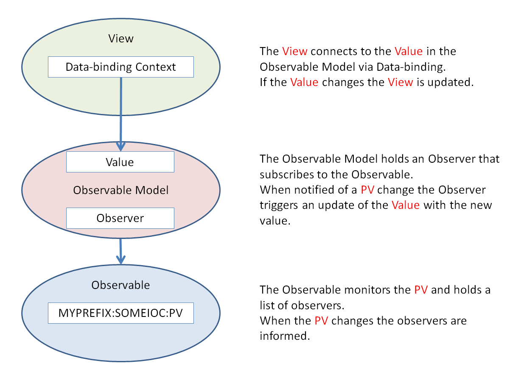

Connecting a view to a PV
See also
An Introduction to Databinding for an explanation of databinding.
PV Switching for a detailed description of how PVs are switched when the IBEX GUI is pointed at a new instrument.
The basic arrangement for the mechanism for connecting a View to a PV is:
{kind=link}
Reading from a PV
The Observable is responsible for the connection to the PV and monitoring it for changes. The most basic pattern for creating and observing a PV is:
import uk.ac.stfc.isis.ibex.epics.observing.ForwardingObservable;
import uk.ac.stfc.isis.ibex.epics.switching.ObservableFactory;
import uk.ac.stfc.isis.ibex.epics.switching.OnInstrumentSwitch;
import uk.ac.stfc.isis.ibex.instrument.channels.CharWaveformChannel;
import uk.ac.stfc.isis.ibex.instrument.InstrumentUtils;
public class TitleVariable {
private final ObservableFactory obsFactory = new ObservableFactory(OnInstrumentSwitch.SWITCH);
public final ForwardingObservable<String> titleRBV =
obsFactory.getSwitchableObservable(new CharWaveformChannel(), InstrumentUtils.addPrefix("DAE:TITLE"));
}
The above PV is linked to a model class, which derives from ModelObject, in the following way:
import uk.ac.stfc.isis.ibex.epics.observing.BaseObserver;
import uk.ac.stfc.isis.ibex.model.ModelObject;
public class ObservableTitleModel extends ModelObject implements TitleModel {
private String title;
private final TitleVariable titleVar;
private final BaseObserver<String> titleObserver = new BaseObserver<String>() {
@Override
public void onValue(String value) {
setTitle(value);
}
// Error and connection-status handling omitted
};
public String getTitle() {
return title;
}
public void setTitle(String value) {
firePropertyChange("title", this.title, this.title = value);
}
public ObservableTitleModel(TitleVariable titleVar) {
this.titleVar = titleVar;
titleVar.titleRBV.subscribe(titleObserver);
}
}
This model class can now be bound to a UI element using data binding.
Writing to a PV
Similar to an Observable, a Writable is responsible for writing to a PV on demand. The most basic pattern for creating a writable PV is:
import uk.ac.stfc.isis.ibex.epics.observing.ForwardingObservable;
import uk.ac.stfc.isis.ibex.epics.writing.Writable;
import uk.ac.stfc.isis.ibex.instrument.channels.CharWaveformChannel;
import uk.ac.stfc.isis.ibex.instrument.InstrumentUtils;
public class TitleVariable {
private final WritableFactory writeFactory = new WritableFactory(OnInstrumentSwitch.SWITCH);
public final Writable<String> titleSP =
writeFactory.getSwitchableWritable(new CharWaveformChannel(), InstrumentUtils.addPrefix("DAE:TITLE:SP"));
}
The above PV can be linked to a model class, which derives from ModelObject, in the following way:
import uk.ac.stfc.isis.ibex.epics.observing.BaseObserver;
import uk.ac.stfc.isis.ibex.model.ModelObject;
public class ObservableTitleModel extends ModelObject implements TitleModel {
private final TitleVariable titleVar;
// getTitle omitted
public void setTitle(String value) {
this.titleVar.titleSP.write(value);
}
public ObservableTitleModel(TitleVariable titleVar) {
this.titleVar = titleVar;
}
}
The above class can then be linked, via data binding, to a UI widget, using the SWT.Modify flag so
that a notification is received each time the user input changes.
In many cases it is preferable not to send a new value to a PV on every keystroke, but instead to have an explicit
“set” action. To achieve this, the above class is modified to only stash the title setpoint, and to have an explicit
writeTitle method:
import uk.ac.stfc.isis.ibex.epics.observing.BaseObserver;
import uk.ac.stfc.isis.ibex.model.ModelObject;
public class ObservableTitleModel extends ModelObject implements TitleModel {
private String titleSP;
private final TitleVariable titleVar;
// getTitle omitted
public void setTitleSP(String value) {
firePropertyChange("titleSP", this.titleSP, this.titleSP = value);
}
public void writeTitleSP() {
this.titleVar.titleSP.write(this.titleSP);
}
public ObservableTitleModel(TitleVariable titleVar) {
this.titleVar = titleVar;
}
}
The writeTitleSP method is then called from an explicit set button in the view:
Button btnSet = new Button(parent, SWT.NONE);
btnSet.setText("Set");
btnSet.addSelectionListener(new SelectionAdapter() {
public void widgetSelected(SelectionEvent e){
model.writeTitleSP();
}
});